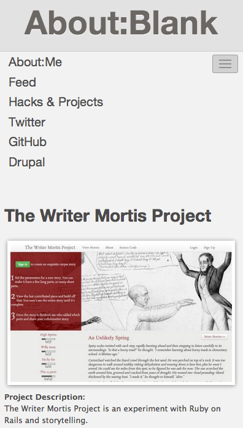
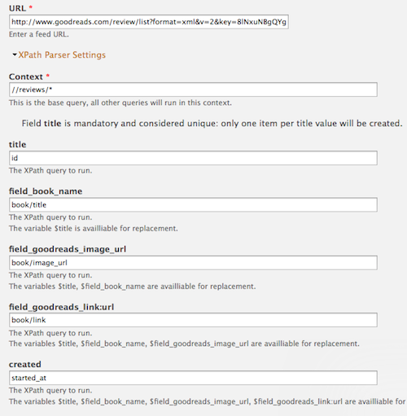
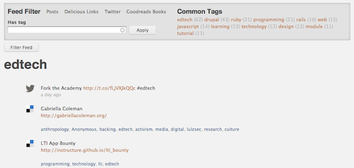

- Functional Requirements
- DevOps
- Deployment
Agenda
Functional Requirements
- Look & Feel: Clean, minimal, responsive
- Tell a Story
- Blog Platform
- Display content from multiple sources
Functional Requirements
Look & Feel
- Omega sub-theme
- Display Suite for content type-level layout
- Custom mobile menu (jQuery) and responsive images (CSS)
- Pathauto for clean URLs
Functional Requirements
Tell a Story
function timelinejs_node_view($node, $view_mode, $langcode) {
$timeline_field = $node->field_include_timeline_['und'][0]['value'];
if ($timeline_field != 1) {
return;
}
drupal_add_js(array('timelinejs' => array(
'embedSource' => "",
)), array('type' => 'setting', 'weight' => 10));
drupal_add_js(
$GLOBALS['base_path'] . drupal_get_path('module','timelinejs') . "/timeline_embed.js",
array('type' => 'file', 'weight' => 0));
}
Functional Requirements
Blog Platform
- Custom content type
- Markdown for rich text
- Google code prettify for code snippets
- Semantic timestamps - Timeago jQuery plugin
- Workbench for content authoring flow
Functional Requirements
Display and Filter Content
Feeds Importers
- Content from Twitter, Delicious and Goodreads
- Turns content into nodes and taxonomy terms
Functional Requirements
Display and Filter Content

View
Functional Requirements
Display and Filter Content
Display
- Views Infinite Scroll to automatically pull in new pages as user scrolls
- Tag Cloud to show most tagged items
- Custom jQuery to show and hide the filter
if (Drupal.settings.twitterImport.arg1 == null) {
$('.region-header-first').hide();
}
$('.region-header-second').html('Filter Feed');
$('.region-header-second a').click( function() {
$('.region-header-first').slideToggle('fast');
});

DevOps
Methods & Tools
- Ubuntu VM & Vagrant
- Git & GitHub
- Drush (alias & sql-sync)
Deployment
Methods & Tools
- Dreamhost
- Aggressive caching
- Boost module for static page cache
- Rules to expire cache unders certain conditions
- xmlsitemap and Bash script to warm cache after cron
Future Plans
- Enhancements to feed content
- Web services endpoints
<Thank You!>